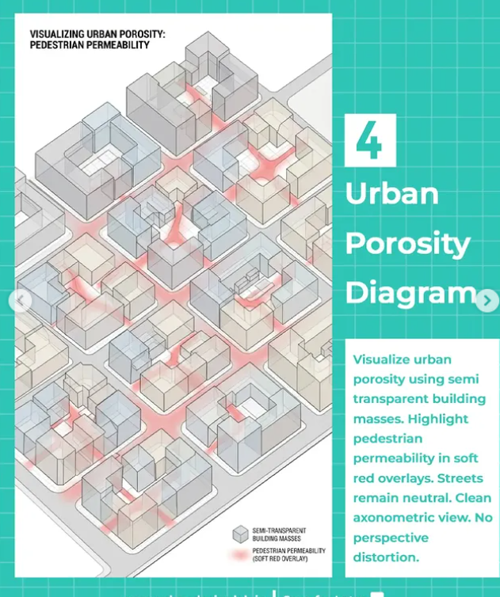
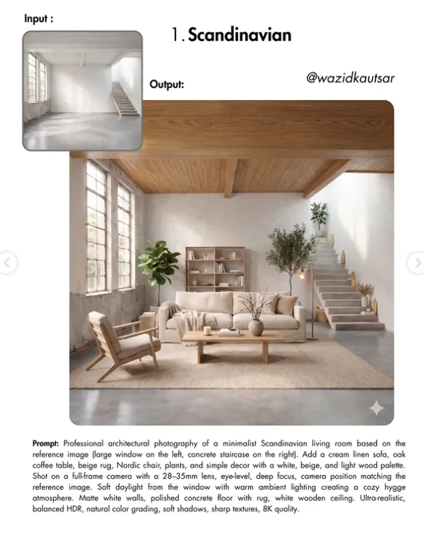
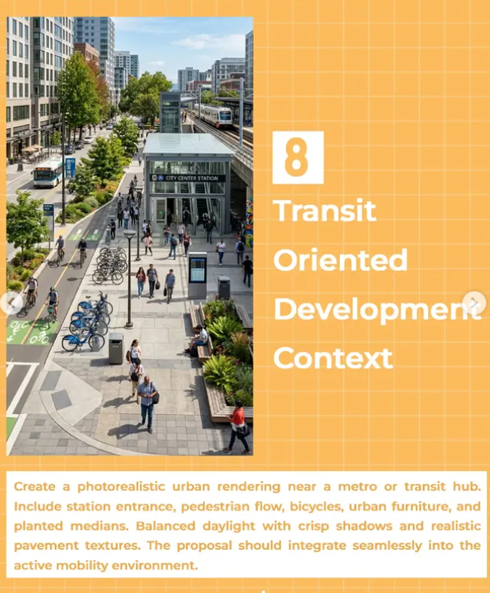

From the library

Renderings
Sketch to Photorealistic Render

Post-processing
Change Season or Atmosphere

3D
Plan to Isometric Diagram

Urban Planning
Urban Porosity Diagram
 2.png)
Plans
Photo to Elevation or CAD

Renderings
Interior Style Transformation

Urban Planning
Transit-Oriented Development

Illustrations
Rendering to Line Drawing

 3.png)